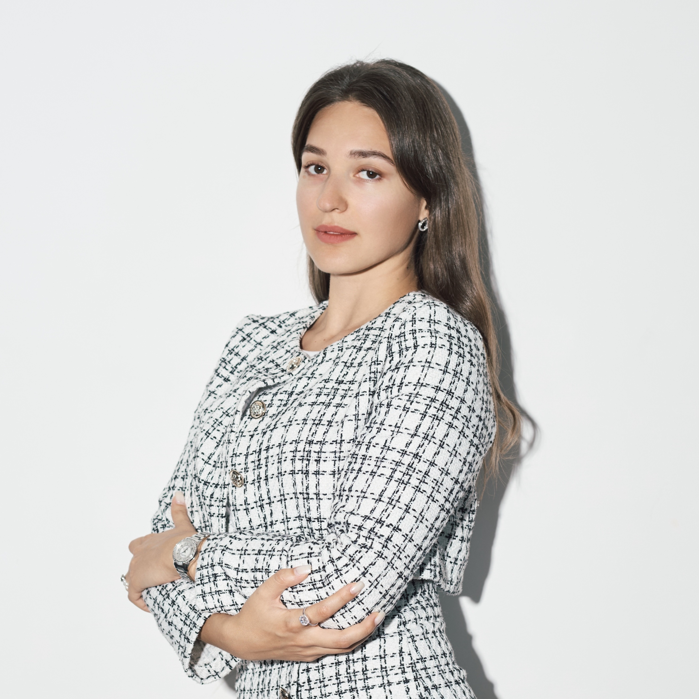
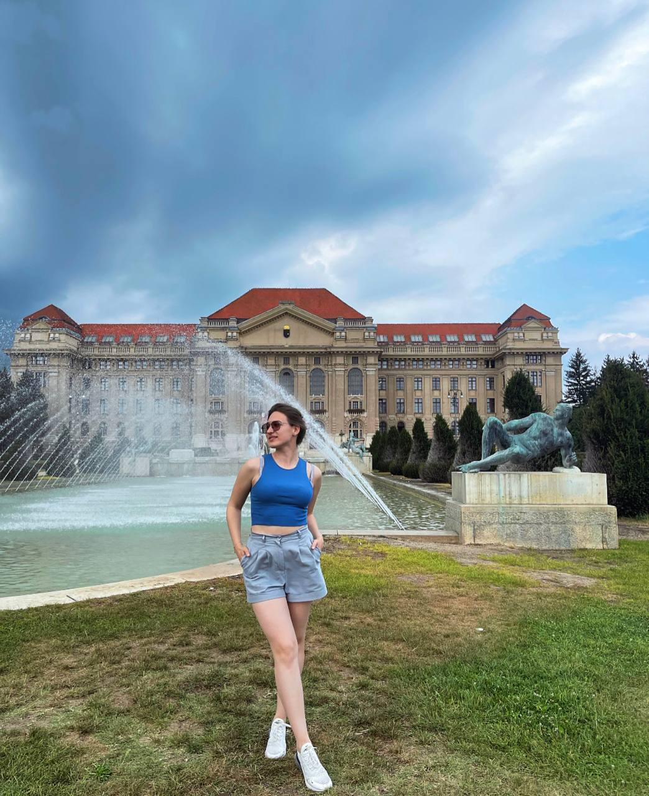
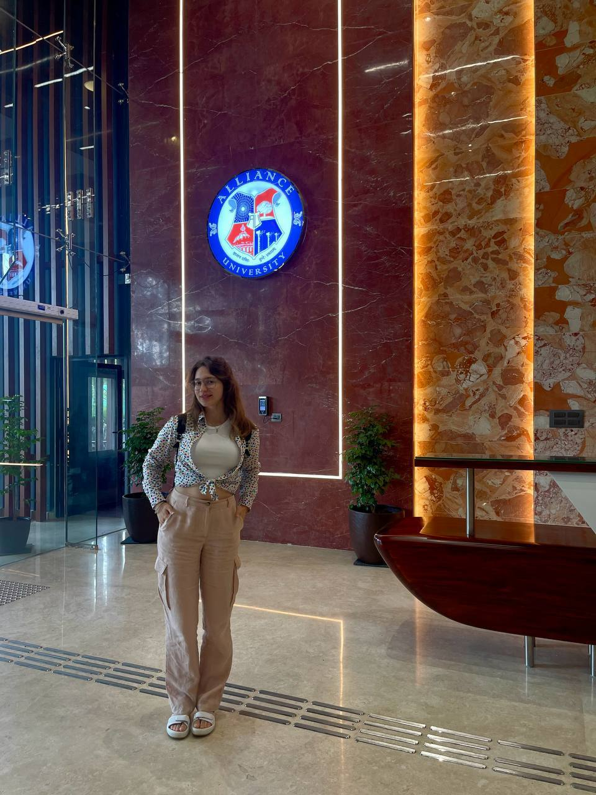
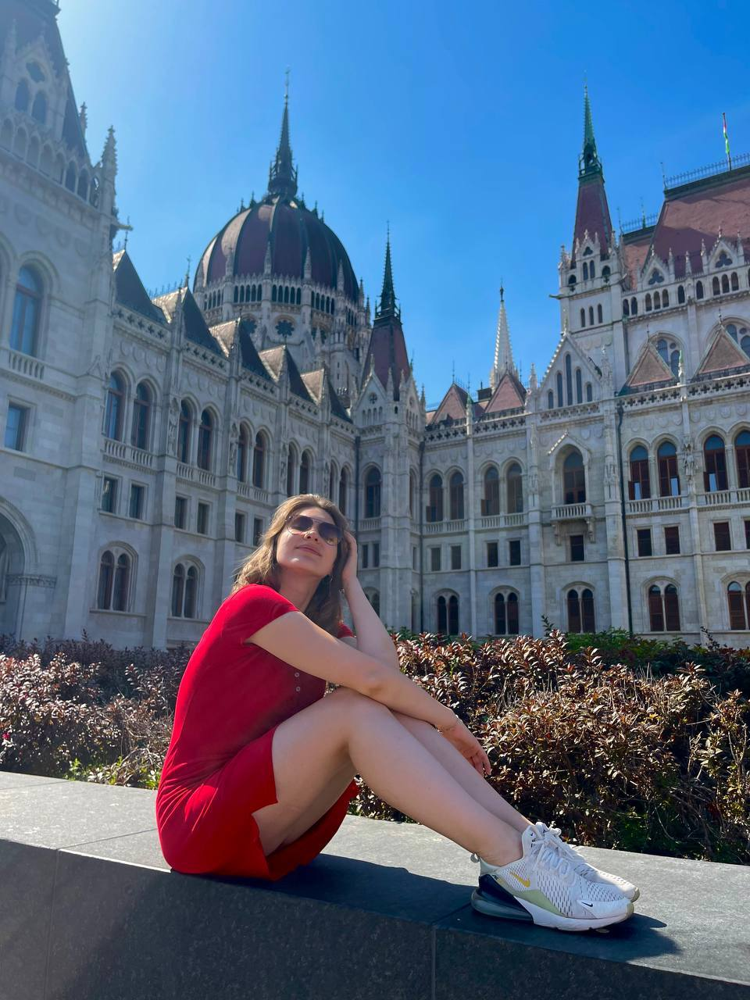
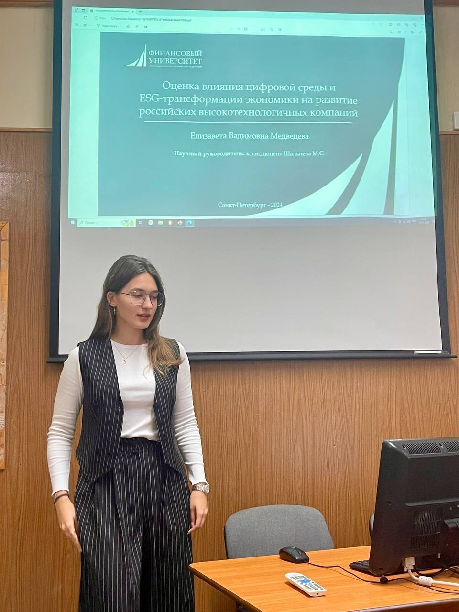
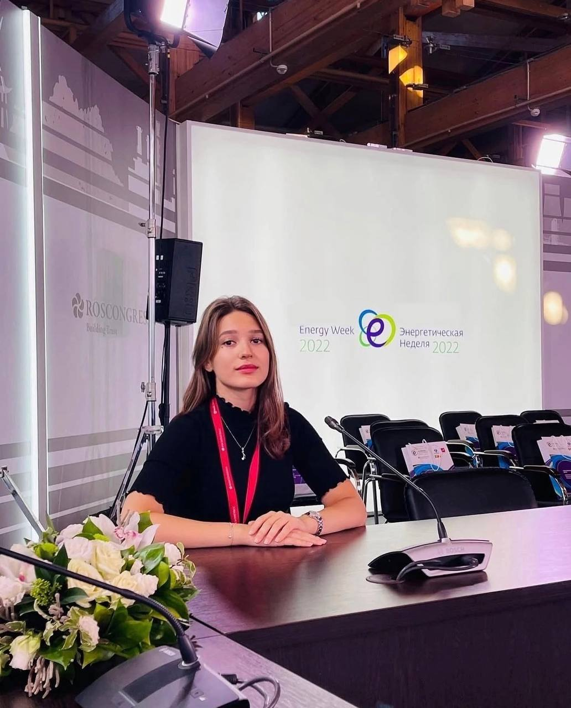

Профессиональные интересы
Финансовый анализ, бизнес-аналитика, стратегия, корпоративные финансы, ESG, инноватика, технологические решения и высокотехнологичные компании.
Finance | Analytics | Strategy
Ведущий специалист на стыке аналитики, внедрения технологий, финансов и бизнес-исследований.

Финансовый анализ, бизнес-аналитика, стратегия, корпоративные финансы, ESG, инноватика, технологические решения и высокотехнологичные компании.
Структурирование данных, аккуратная визуализация выводов, исследовательская логика, работа с международной повесткой и сложными материалами.
Системный подход, внимание к деталям, умение соединять финансовую, стратегическую и коммуникационную части проекта.
Базовый трек строится вокруг финансов, экономики, бизнес-аналитики и стратегического менеджмента.
2025-2027
Магистратура, Факультет налогов, аудита и бизнес-анализа. Программа: «Анализ и стратегический менеджмент в бизнесе».
2021-2025
Бакалавриат, Факультет экономики и бизнеса. Программа: «Корпоративные финансы и бизнес-аналитика» с частичной реализацией на английском языке.



Практический набор для финансовой аналитики, подготовки исследовательских материалов и визуальной упаковки выводов.
Английский: Upper-Intermediate.
Научный трек показывает интерес к темам технологической трансформации, устойчивого развития и корпоративного управления.


Студенческое лидерство, волонтерство и спорт.
Контактные данные взяты из резюме.